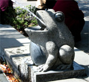
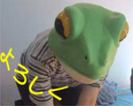

上野に豪快かえる噴水！ 【東京発東京kero55同志記者】 桜が満開になっていたある週末の土曜日。あいにくの雨と強風だったので、日曜日にどっと花見客が。私も行ったので、文句言えませんが、上野はもうすごい混みようでした。そこでこんなものを発見。かえる噴水です。御徒町側から上野公園に上がって行く坂の起点に設置され、一人で健気に水を噴き上げていました。 交番の裏なので、これからの季節は是非ここで涼を取って上野にお出掛けください。
【全国かえる奉賛会】いいなああああ。大王が独裁者になったら、このカエル噴水の巨大なものをあちこちに建設して、豪快に噴水ふきあげさせます。健気ですなあああ。三月初めに江戸にいったのに、残念だったなあ。
謎の国営放送ドイツ語講座にカエルが常時出演！ 【ドイツ帝国ミュンヘン発げこげこ大王七世直筆】大王は、国営放送で深夜に再放送されている、ドイツ語講座を欠かさず見ているのだが！どうしてかというと、講座のスクリーンに謎のカエルが常時写っているからなのだ。
【ドイツ帝国ミュンヘン発げこげこ大王七世直筆】大王は、国営放送で深夜に再放送されている、ドイツ語講座を欠かさず見ているのだが！どうしてかというと、講座のスクリーンに謎のカエルが常時写っているからなのだ。なぜか、背景の写真はミュンヘンなのですが、そのミュンヘンの町のど真ん中の画面のところに、まるでケロタンみたいなでかいカエルが常時貼り付いているのである。 どうしてなんだ。このカエルなんだろ？気になるけど、番組の最初から自然に存在しているので、誰も珍しくは思っていないのである。
ドイツ語会話の寸劇とかあるときに、『それでは、実際に聞いてみましょう』とか、司会役の人が案内すると、カエル画面が寸劇に切り替わり『はい。お分かりになりましたか？』で終わると、もとのカエル画面ミュンヘンになっているのである。誰かあのカエルのことを教えてくれえええ。気になって寝れん。
ベルリンに新しいカエル専用壁が建設中！【ドイツ帝国ベルリン発】ベルリン東部のパンコウ地区で、、カエル専用の壁が建設中なんだってさあああ。交通量の多い道路を、カエルが安全に渡れるようにするための壁だあああああああ。なんでもトンネルとか壁とかで、日本円にして５５００万円を投入するらしいぞ。日本も同盟国のドイツを見習い、カエルのために予算を投入しようぜえええええ。
でも、どこの国にも、カエルを邪魔する人もいるらしくて、 納税者協会のギュンター・ブリンカー会長は「カエル保護は大事だが、とんでもない税金の無駄遣いだ」と、怒りをこめて語っているそうだあああ。おこんないでくれええ。ギュンターさん。
愛知県にカエルグッズショップ誕生か！【愛知発みなさん同志記者】かえるグッズのショップが愛知県にあると聞いたのですが、どこにあるかわかりません。愛知県の方からの発見情報を待ちます。ぜひぜひ情報を教えてください。よろしくお願いします。
【全国かえる奉賛会】大王にも教えてくれえええ。カエル饅頭の故郷である愛知県についに専門店ができたのかああ。愛知からの連絡を待つ。
 Ｅ３カエル同志が実行委員長に決定！【福岡かえる展５実行委員会】福岡かえる展５の実行委員長にＥ３カエル同志が決定しました。今年は、『かえる縁日』というテーマで、子供時代を思い出すようなコンセプトで会場の建設をするのですううう。生物世代は、かえると遊んだころを思い出し、玩具世代はケロッピとかを思い出しながら、いっしょに楽しもう！ ちなみにスタッフや出展者も募集しています。詳しくは公式ページを！ 今年の実行委員長は、常時カエルをかぶっているのですが、あのかぶりものを取ってもカエルだったら、どうしよう。大王はいつもどきどきしながら、打ち合わせをしているのです。 |
メールマガジン登録
メールマガジン解除
Powered by


かえる古新聞過去に取り上げた記事を見出し付きで一覧したい人は、ここをクリック◆創刊号を見る◆先週号を見る◆話題の号を見る◆かえる新聞の昔を読む
|
私も入っています。。全国かえる奉賛会
大王様に会うには、このバナーをクリック。ずっと奥に写真館があるぞ。全国かえる奉賛会に入会するには、自分のホームページのどこかに、下の部分を追加するとバナーがリンク付きで表示されるぞ。どんどん入会しましょー |


|